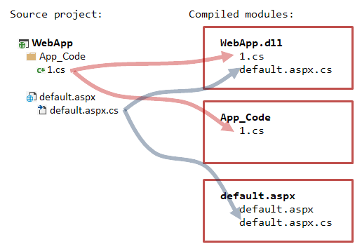
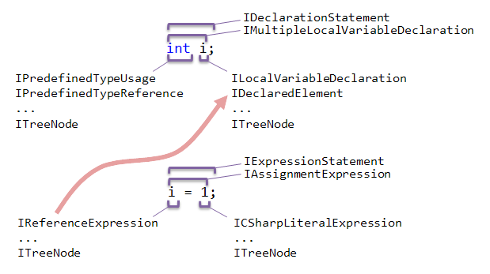

Navigate Code
ReSharper provides two types of navigation:
- Context-dependent: navigation target is somehow related to the element under the caret (Navigate to Declaration, etc). See:
- Global: any navigation target (Go to Everything, etc).
The navigation task can be divided into two steps:
- Find the navigation target (a particular code element). For example, in case of context navigation, you should first obtain the tree node under the current caret position and then find the related code element - your navigation target (e.g., declaration, particular usage, etc). See:
- Move the caret to the target code element. See:
Before you’ll take a look at SDK examples on how to perform navigation, we strongly recommend that you acquaint with ReSharper’s project model and PSI fundamentals below in this section. Also it’s worth to take a look at the example in Get a Tree Node by Full CLR Name (this code actively operates with project model and PSI entities).
Project Model Basics
Project model is the API that allows working with entities that constitute a solution in Visual Studio: a solution itself, projects, folders, and files.
The main project model elements are:
ISolution: solution representation created when a solution is loaded in Visual Studio. This is the root element of the project model that normally corresponds to the solution node in Visual Studio’s Solution Explorer.ISolutionprovides many useful interface for working with other elements of the project model and even go down to PSI (e.g., seeISolution.GetPsiServices()).IProject: project and solution folder representation that provides interfaces for getting project files, project folders, and some specific staff, like, e.g., module-to-project references.IProjectalso has methods that allow you to go down to the PSI level, e.g.,GetPsiModules()orGetPsiSourceFileInProject(). There are several kinds of projects (IProject.Kindproperty): solution folder, website, regular project, misc files project.IProjectFolder: project folder representation.IProjectFile: representation of a file in a project. Provides various interfaces for working with other dependent project model elements, .e.g.,GetDependentFiles()to get dependent project files.
Other important elements:
IPsiModule: a compilation unit. Normally, for a C# class library,IPsiModulecorreponds to a compiled .dll file (so, it’s a rough equivalent ofIProject).IPsiSourceFile: an abstraction that represents a file with source code that must be compiled, i.e, included in a compilation unit (IPsiModule). In a simple case, it’s an equivalent ofIProjectFile.IPsiSourceFileallows you to get IFile that represents the PSI syntax tree of the file. So, it’s somewhat your bridge down to the PSI level.
Why does ReSharper need these two entities if it already has IProject and IProjectFile? The problem is that one single project may be compiled into multiple modules as well as single IProjectFile may be represented with multiple source files. For better understanding consider the example below. Say, we have a simple web project called WebApp:

Here the single project is compiled into three modules. Each .cs file has two IPsiSourceFile(s) associated with it.
Therefore, if you are 100% sure that your project file is represented with just one source file, you can obtain an instance of IPsiSourceFile by calling the IProjectFile.ToSourceFile() method. It will return FirstOrDefault() element from the PSI source files collection. Otherwise, get all IPsiSourceFile(s) by calling ToSourceFiles().
To obtain modules from IProject, use the IProject.GetAllModules() method.
PSI Basics
PSI (program structure interface) is the API for working with code syntax tree (a tree representation of the source code). The main PSI elements are:
IFile: an abstraction used to build the PSI syntax tree from IPsiSourceFile. One source file may contain manyIFile(s): one primary, many secondaries (build upon primary using the same PSI nodes), and injected PSIs (e.g., when there is a language injection, like a C# file containing a variable with JS code). To obtainIFilefrom a source file, use theIPsiSourceFile.GetPsiFile()method.ITreeNode: the most basic element of the syntax tree. Any element of the tree is a tree node (implements theITreeNodeinterface). E.g., even a closing semicolon or a space between two words are tree nodes.IReference: abstraction that attaches semantic model to tree nodes. E.g., the expressioni = 1has a reference fori(a tree node that implementsIReferenceExpression) which resolves toIDeclaredElement(see below), i.e., some property, field, or a local variable. You can use this reference in refactorings or context actions, to navigate to the referenced code element, and so on. Some nodes also have specific named references (depending on the node type). The ITreeNode interface provides the GetAllReferences method that returns all node references.-
IDeclaredElement: element of the semantic model. It is a meaningful code element that can be referenced by other code elements: a class declaration, a property, etc. Note that there’s a difference betweenIDeclarationandIDeclaredElement.IDeclaredElementis an entity you can refer to, whileIDeclarationis just a place in code where the declaration happens. For example, you have a partial classFoothat is implemented in two different parts:public partial class Foo { /* ... */ } public partial class Foo { /* ... */ }Both top tree nodes of these declarations implement
IDeclaration -> IClassDeclaration. But there’s only oneIDeclaredElementthe declarations refer to via theDeclaredElementproperty - the classFoodeclared in the global namespace. - Other PSI types: there are a lot of specific helper types for particular elements of the syntax tree. E.g.,
IVariableDeclarationandILocalVariableDeclaration(for variable declarations),IExpressionStatement(for representing statements), and many more. Moreover, there are a lot of types that are specific to a particular language and, therefore, provide specific methods relevant only in the context of this language. E.g.,ICSharpDeclarationorIJavaScriptDynamicProperty.
For better understanding, consider the example:

Note that even though this is not shown on the picture, the equals sign, semicolons, and even whitespaces are also special tree nodes of the syntax tree.